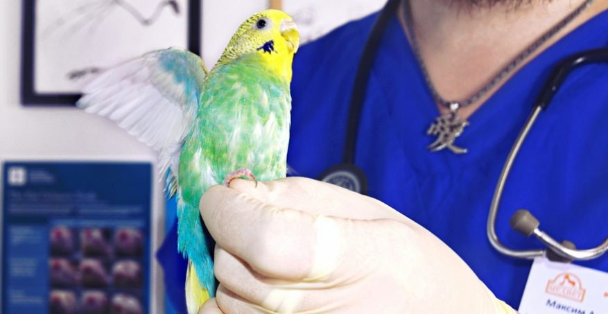

Не забывайте следить за состоянием здоровья попугая. Показывайте волнистого попугайчика ветеринару-орнитологу не реже одного раза в год, чтобы проверить его здоровье. Если ваша птица начала вести себя странно, или вы заметили у нее необычные симптомы, как можно скорее обращайтесь к ветеринару. Обращайте внимание на ненормальное дыхание, выделения из глаз или носа, появление слизи на перьях, странное поведение или потерю веса. Если вы заметите какой-либо из перечисленных симптомов, немедленно обращайтесь к ветеринару.
